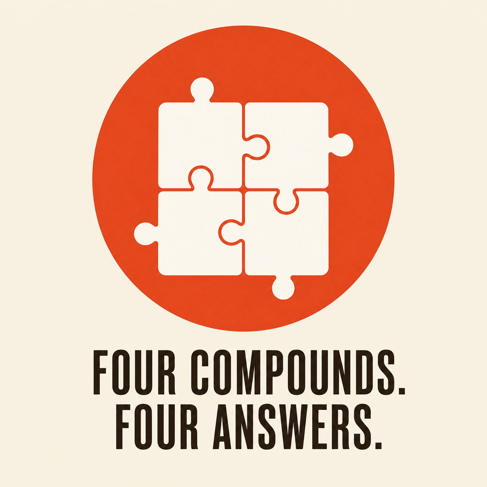
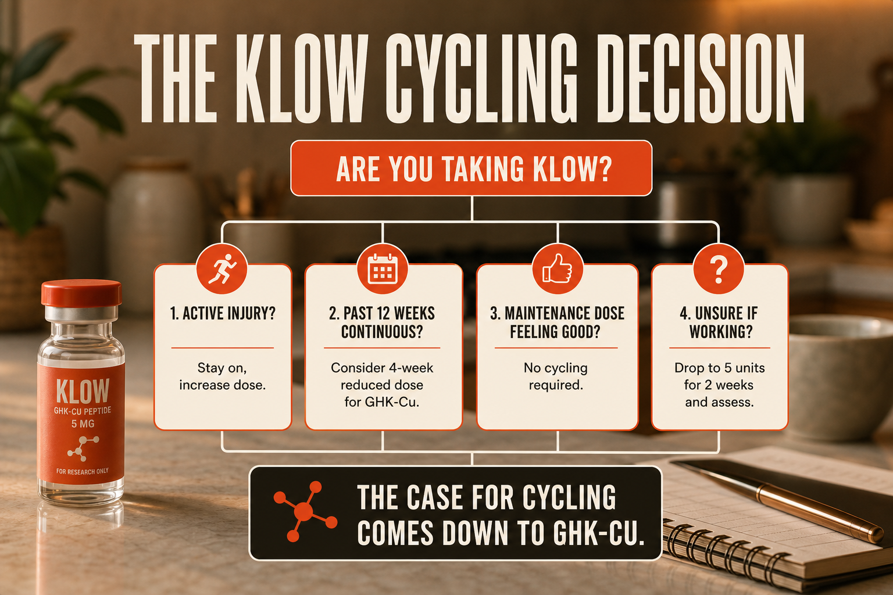

This Question Sounds Simple Until You Look At The Blend Properly.
Someone told you to cycle off KLOW every six weeks. Maybe it was the forum you found at 11pm. Maybe it was the vendor page. Maybe it was a YouTube video from someone who seemed to know what they were talking about.
Here is the thing. I used to follow that advice without questioning it. Six weeks on, six weeks off, back on again. I structured my entire protocol around it. Then I started actually looking into why and I realized that the answer is more complicated, more honest, and a lot more interesting than just reset your receptors.
Let me walk you through what I found.
Four Completely Different Compounds Means One Blanket Rule Usually Fails.
Before we talk about cycling, you need to understand what KLOW is because cycling advice that applies to one of its four components may not apply to all of them. Lumping the whole blend under one rule is where a lot of people go wrong.
KLOW 80 contains BPC-157, TB-500, GHK-Cu, and KPV. Four completely different compounds. Four completely different mechanisms. And that distinction matters enormously when you ask whether you need to take a break.

BPC-157 works locally around repair signalling and angiogenesis. TB-500 works more systemically through cell migration. GHK-Cu is a copper-binding repair signal tied to collagen and anti-inflammatory gene activity. KPV is a short-chain anti-inflammatory peptide focused around NF-kB and MAPK signalling.
Most Cycling Advice Was Borrowed From Compounds That Actually Do Need Breaks.
The honest answer is that most peptide cycling recommendations were borrowed from pharmaceutical drug protocols and applied broadly without checking whether the underlying mechanism actually required a break.
The compounds that genuinely require cycling are ones that work through receptor pathways that fatigue or suppress. Growth hormone secretagogues like CJC-1295 and Ipamorelin are the clearest example. SARMs and MK-677 belong in that conversation too because they change the way endocrine signalling regulates itself.
KLOW's four components do not work this way. None of them trigger a receptor pathway that measurably fatigues or causes negative feedback suppression. The cycling recommendation was essentially imported from a different category of compound and applied here because it seemed cautious.
No Known Receptor Fatigue Mechanism.
A 2025 systematic review in the American Journal of Sports Medicine examined 36 studies on BPC-157 in orthopaedic applications, spanning research from 1993 through 2024. The review confirmed consistent effects in preclinical models including growth hormone receptor expression enhancement, angiogenesis promotion, and inflammatory cytokine reduction. Across more than three decades of research, no documented pattern of receptor desensitization was identified.
A 2025 pilot safety study administered up to 20mg of BPC-157 intravenously in two healthy adults, doses dramatically higher than anything in a standard injectable protocol. No adverse effects. Plasma concentrations returned to baseline within 24 hours.
BPC-157 works through the nitric oxide pathway, FAK-paxillin signalling, and VEGF upregulation, not through a single receptor that internalizes and reduces surface expression with chronic exposure. One documented animal study found that a single initial dose maintained effectiveness throughout 46 days of continuous exposure without observable tolerance development.
The cycling argument for BPC-157 is not strongly supported by available evidence. The short half-life of roughly four hours means it clears your system completely between daily doses. Your body gets a natural mini-reset every single day.
Continuous Low-Dose Use Has A Better Case Than Mandatory Breaks.
TB-500 is a synthetic fragment of Thymosin Beta-4, a 43-amino-acid protein expressed in nearly every mammalian cell. Its primary mechanism is G-actin sequestration, which regulates the pool of monomeric actin available for cell movement. More available G-actin means faster, more coordinated cell migration, which is how TB-500 drives systemic tissue repair.
A 2026 scoping review published in Applied Sciences examined 80 studies on TB-4 and TB-500 in tissue healing contexts through March 2026. The evidence consistently supports repair-promoting effects without documented tolerance development.
Research on continuous protocols notes the absence of documented receptor desensitization with TB-500, supporting low-dose continuous use in principle, though long-term safety data beyond six to nine months in animal models remains limited.
The cycling argument for TB-500 is not supported by receptor biology. The longer half-life of three to five days means it accumulates beneficially with daily dosing, maintaining a consistent systemic level rather than spiking and crashing.
The Anti-Inflammatory Portion Does Not Need A Time-Based Break.
KPV works by interrupting the NF-kB and MAPK signalling cascades, the two primary pathways through which inflammation perpetuates itself. Research published in Gastroenterology demonstrated that KPV reduces inflammatory cytokines by 50 to 70 percent at the tissue level in preclinical gut models.
There is no strong receptor desensitization rationale for cycling KPV the way you would cycle a growth secretagogue. The inflammatory pathways it modulates do not adapt the way hormone receptors do. They remain responsive to the signal regardless of ongoing exposure.
The four-hour half-life also means KPV cycles naturally within your day. Daily dosing is essentially a series of short exposures rather than sustained constant saturation of a single receptor. The cycling argument for KPV is very weak. Evidence supports reassessment based on symptom response rather than a mandatory time-based break.
This Is The One Place Where A Real Cycling Argument Starts To Exist.
GHK-Cu is not a classic receptor agonist, but it is a copper-delivery signal. The meaningful adaptation question is whether copper transporters reduce activity during long continuous exposure, not whether a hormone-style receptor burns out.
GHK-Cu is not a receptor agonist in the traditional sense. It functions as a signalling tripeptide that modulates gene expression related to tissue repair, extracellular matrix synthesis, and copper-dependent enzyme activity. It does not suppress endogenous production of anything.
But there is a different mechanism through which something like tolerance can develop, and it specifically involves the copper component. GHK-Cu tolerance appears linked to copper homeostatic feedback mechanisms that downregulate copper transporter expression when intracellular copper concentrations remain elevated for extended periods, effectively limiting further copper-peptide complex uptake even when extracellular GHK-Cu concentration stays constant.
In plain English: your cells have copper management systems. When copper levels stay elevated continuously for eight to twelve weeks, those transporters reduce their activity to maintain balance. The result is that GHK-Cu becomes less effective at delivering its copper payload. Not because a receptor is exhausted, but because your cells are doing their job of managing copper too well.
Cell culture studies show that integrin surface expression remains significantly suppressed one week after GHK-Cu withdrawal and does not return to pre-exposure levels until roughly 28 to 35 days post-cessation. A seven-day break does not provide sufficient recovery. Properly structured cycling uses an eight to twelve week application phase followed by a four to six week washout.
This is the one legitimate scientific argument for cycling within KLOW. And at 10 units daily from a KLOW 80 vial reconstituted with 3mL BAC water, you are getting about 167mcg of GHK-Cu per dose, on the lower end of the range where copper transporter adaptation takes longer to develop. At that dose, the timeline is likely closer to twelve weeks than eight before adaptation becomes meaningful.
The Practical Decision Usually Comes Down To Context, Not Dogma.

If you are doing 10 units of KLOW daily, here is the honest breakdown by component: BPC-157 does not present meaningful evidence that cycling is required. TB-500 has no documented receptor desensitization. KPV has no receptor fatigue mechanism. GHK-Cu is where copper transporter adaptation makes a structured reset worth considering.
The practical middle ground is not necessarily to stop the entire blend. Rather than cycling your whole KLOW protocol off every six weeks and losing the benefit of three of the four components unnecessarily, a better option may be to run KLOW continuously at your current dose and then, at the twelve-week mark, drop to 5 units daily for four weeks rather than stopping entirely.
You maintain BPC-157, TB-500, and KPV at a lower continuous level. The reduced GHK-Cu intake gives your copper transporters time to reset. Then you return to 10 units. If you ever have an active injury, increase to 15 or 20 units for two to four weeks, then titrate back to maintenance once the acute issue settles.
A Full Stop Is Not Dangerous, But It Removes The Benefits Faster Than Many People Expect.
BPC-157 clears within 24 hours. Local repair signalling stops. TB-500 levels drop over three to five days. Systemic cell migration support fades. KPV clears within four hours. Inflammatory modulation stops. GHK-Cu copper transporter expression gradually recovers over four weeks.
If you have ongoing joint stress, post-exercise inflammation, or gut issues that KLOW was managing, you will likely feel it within a week of stopping.
What will not happen is a crash. There is no withdrawal. No endocrine suppression. No negative feedback loop. None of the compounds in KLOW trigger your body to produce less of anything endogenous. The only thing a full cycle-off accomplishes for BPC-157, TB-500, and KPV is removing the benefit while you wait for GHK-Cu transporters to settle.
The Most Honest Answer Is More Nuanced Than Yes Or No.
The cycling recommendation exists for a reason, but it mostly belongs to compounds with measurable receptor or endocrine fatigue. KLOW only partially enters that conversation through GHK-Cu, and even then the mechanism is slower and more specific than the blanket advice suggests.
When I first started researching this question I expected a clean yes or no. I got something better, a nuanced answer that actually helps me run a smarter protocol.
The cycling recommendation exists for a reason. It was not invented out of nothing. For a subset of peptides and compounds, cycling is genuinely protective and backed by measurable receptor biology. But KLOW's four components, with the partial exception of GHK-Cu at higher doses over longer continuous periods, are not in that category.
The most honest thing I can tell you is this: if cycling KLOW every six weeks makes you feel careful and structured, keep doing it. You are not harming anything. But if the six-week break is disrupting your protocol, costing you supply, or leaving you without benefits during a period when your joints or recovery actually need support, the science does not require you to stop.
Run it. Pay attention to how you feel. Drop the dose rather than stopping entirely when you want to give your body a partial reset. And when you hit twelve weeks, a four-week reduced dose window is the one place where a structured break has a documented mechanism behind it worth respecting.
That is what the research actually says.
The Research And References Behind This Page.
- Vasireddi N et al. Emerging Use of BPC-157 in Orthopaedic Sports Medicine: A Systematic Review. HSS Journal, 2025.
- Lee & Burgess. BPC-157 IV pilot safety study. Alternative Therapies in Health and Medicine, 2025. PMID: 40131143.
- Sikiric P et al. BPC 157 Pleiotropic Beneficial Activity and Its Possible Relations with Neurotransmitter Activity. Pharmaceuticals, 2024. PMID: 38675421.
- TB-500 and Thymosin Beta-4 in Tissue Healing, Regeneration, and Musculoskeletal Repair: A Scoping Review. Applied Sciences, 2026.
- Dalmasso G et al. KPV anti-inflammatory mechanism via PepT1 transporter. Gastroenterology, 2008.
- Tolerance to GHK-Cu Cycling, Managing Research Protocols. RealPeptides.co, 2026.
- Can GHK-Cu Be Cycled Like Other Research Compounds. RealPeptides.co, 2026.
- GHK-Cu Dosage Guide 2026. PeptideDeck.com, 2026.